Verde y blanco es su alma,
en el Villamarín resuena la pasión,
cada gol, un latido que une a Sevilla,
guerreros en el campo, sueños en las gradas.
Betis eterno, fuerza y esperanza,
más que un club, un sentimiento que nunca muere.
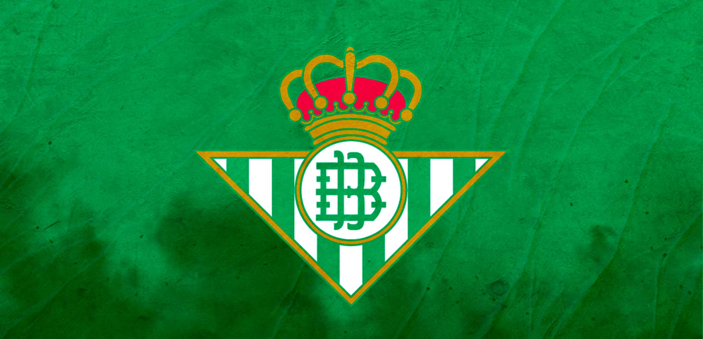
 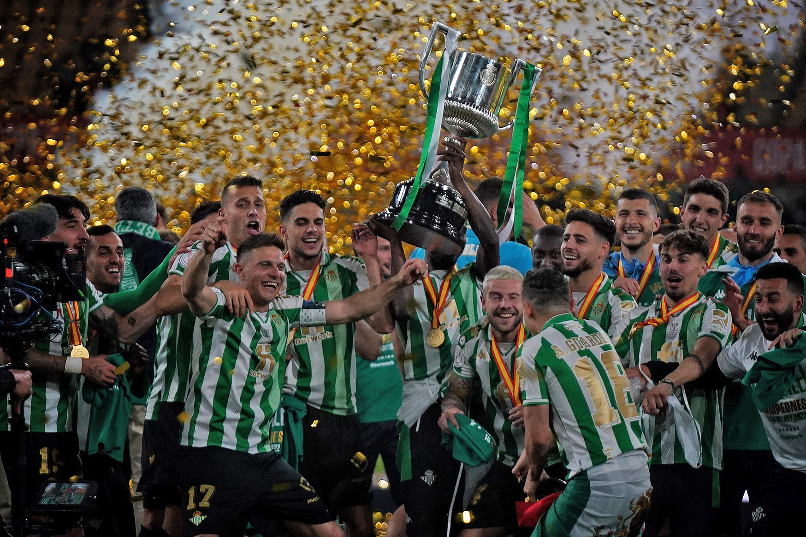
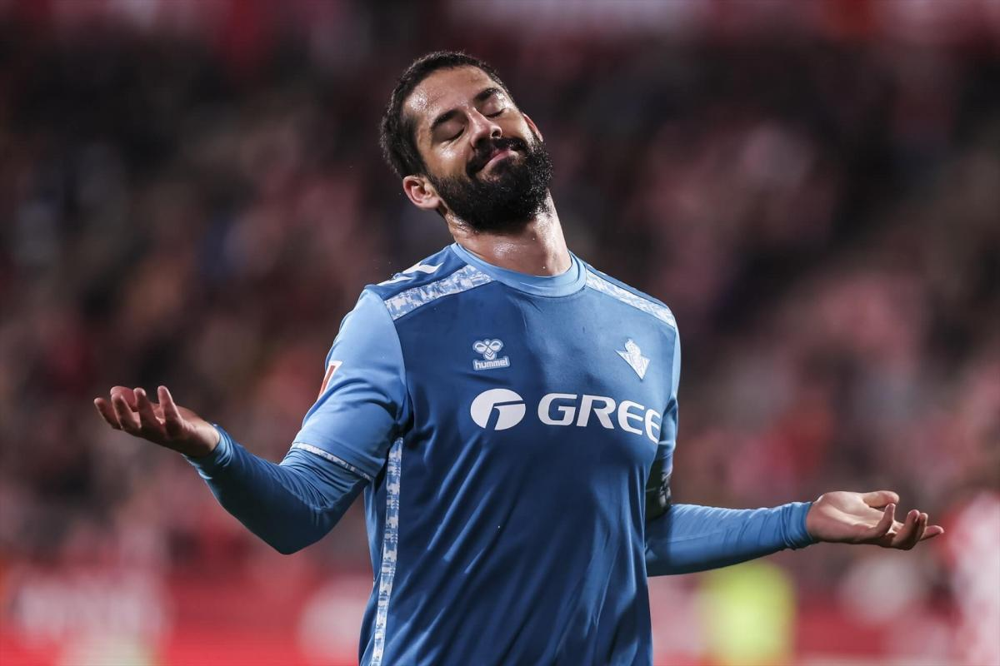
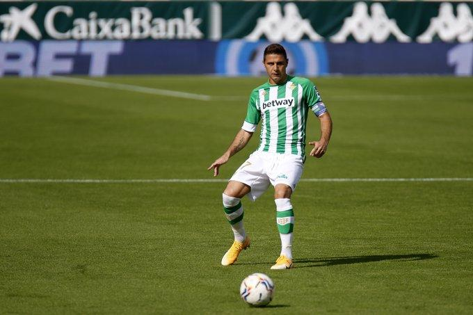
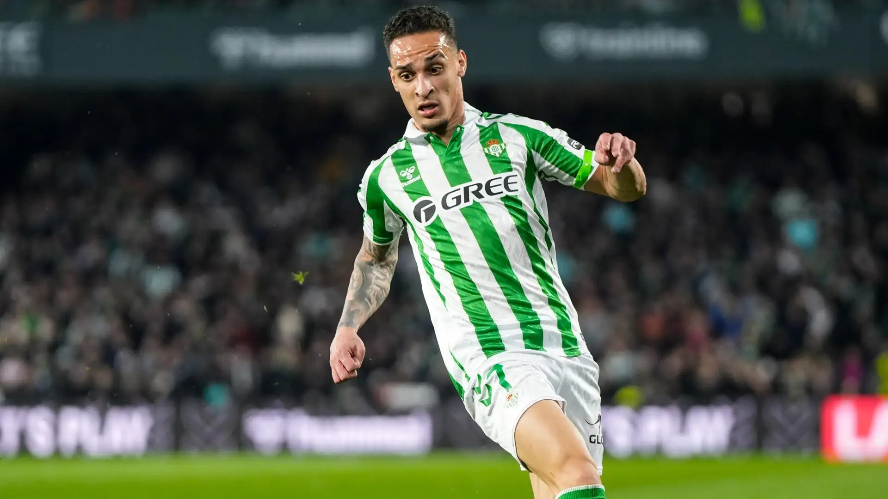
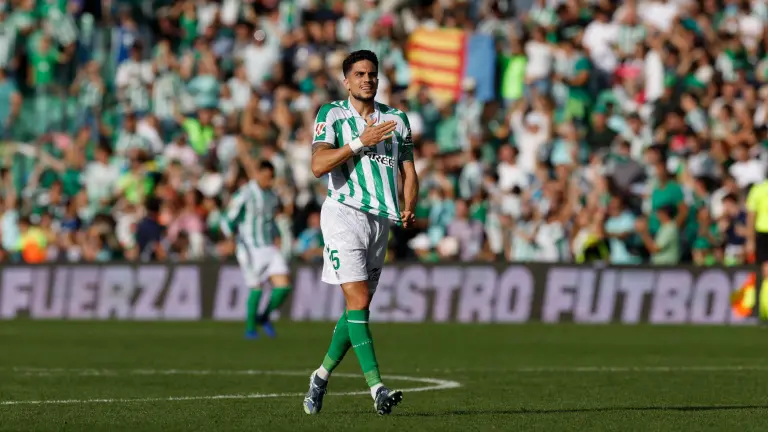
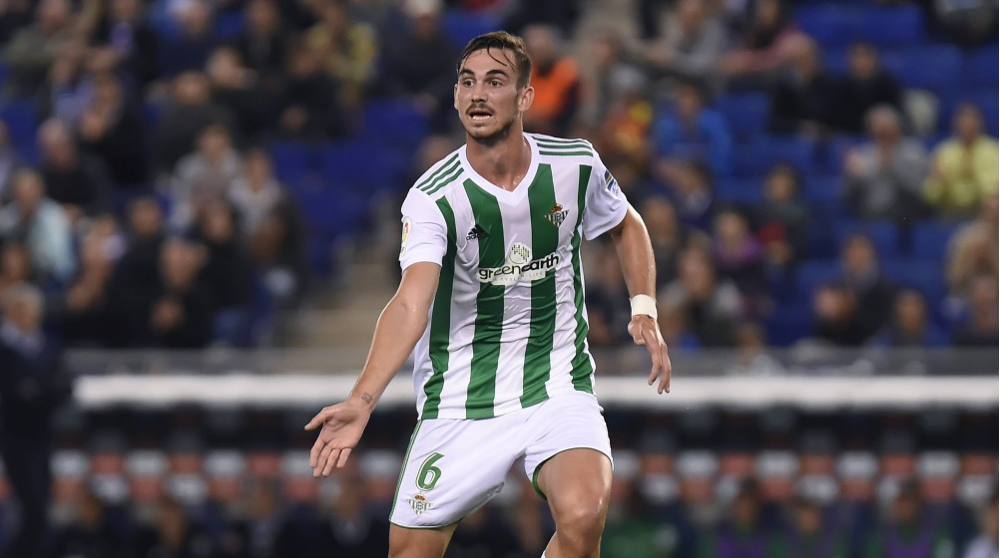
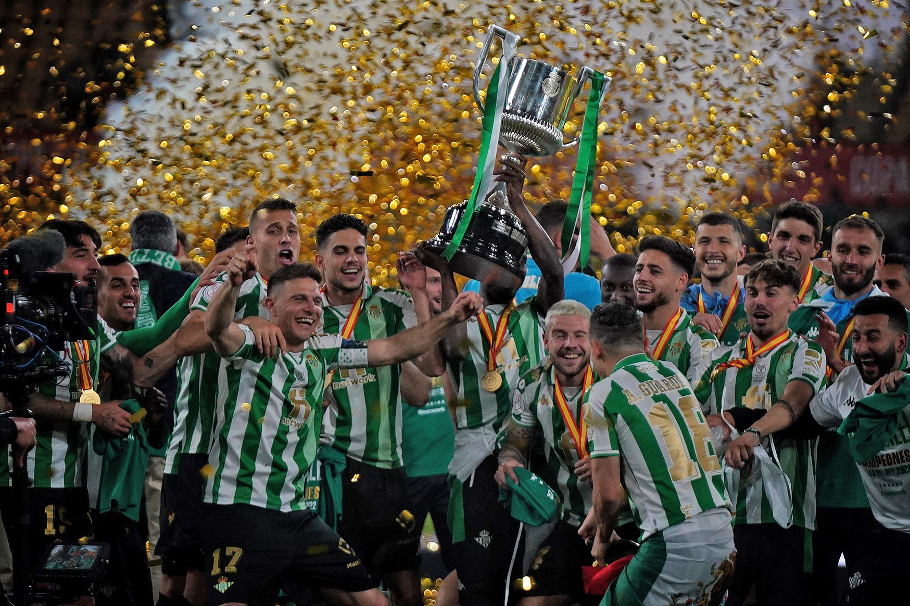
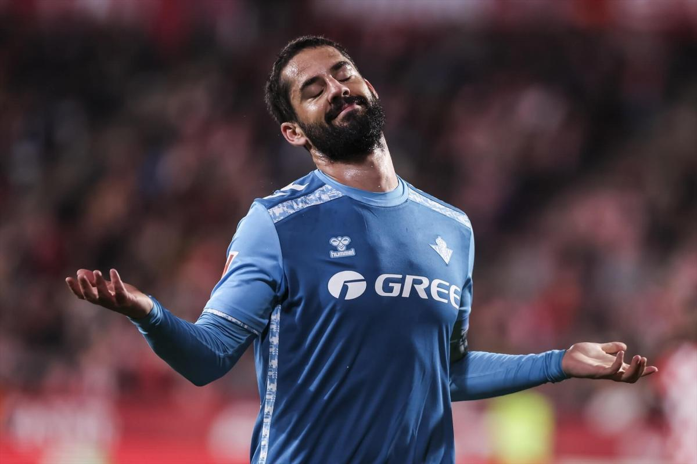
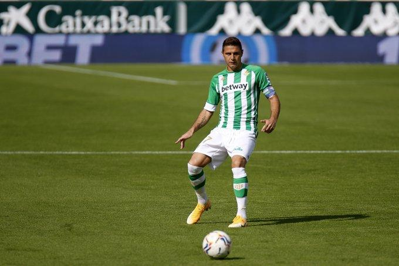
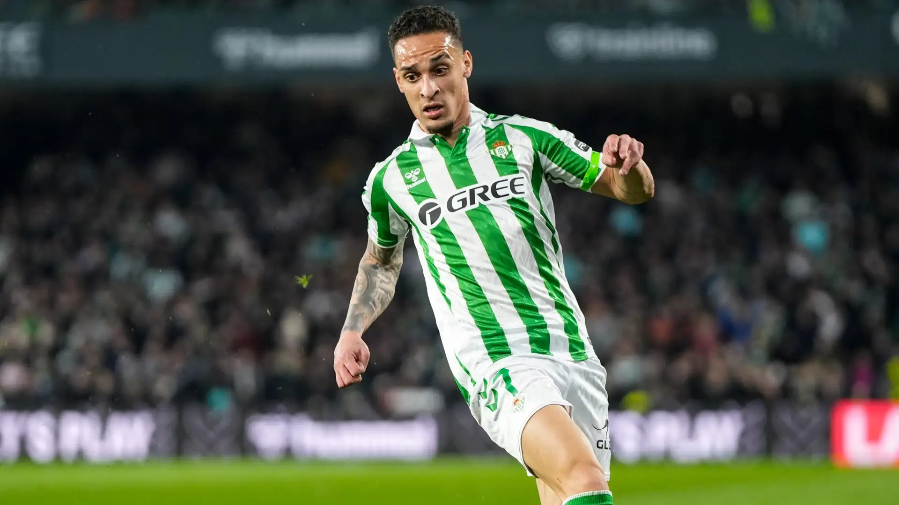
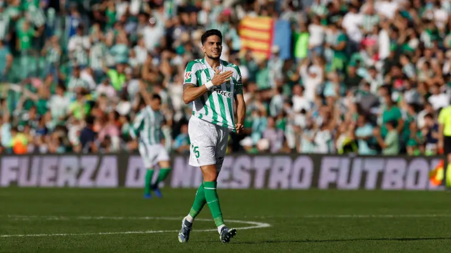
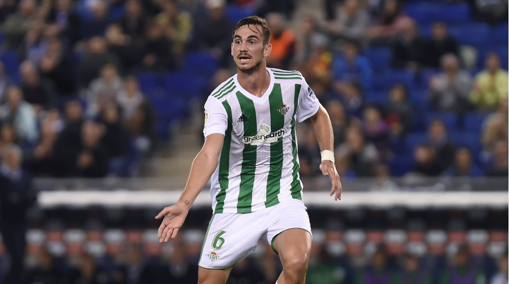
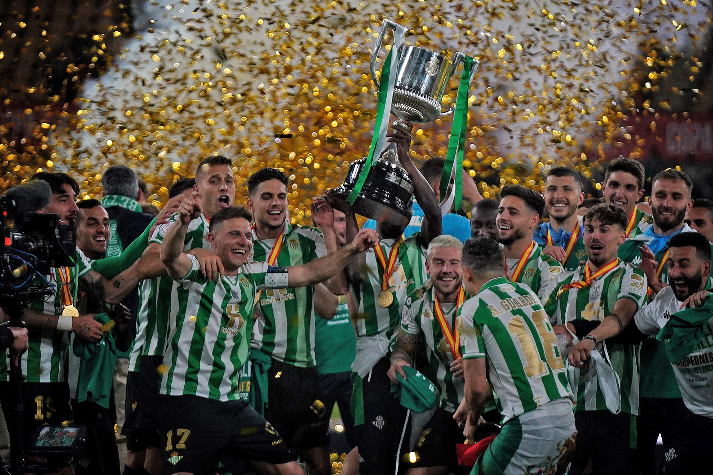
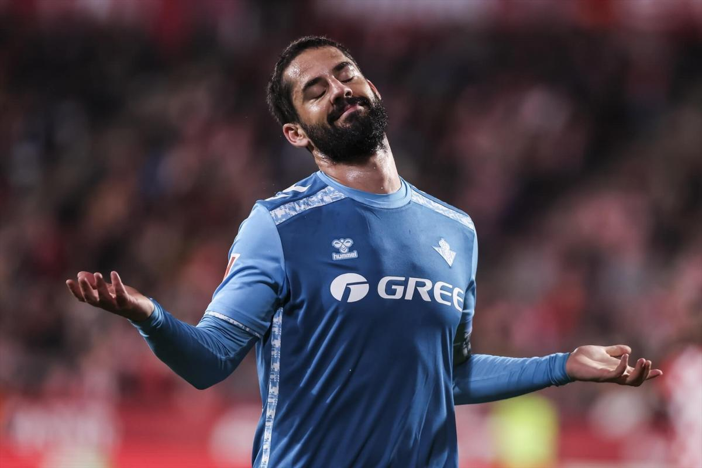
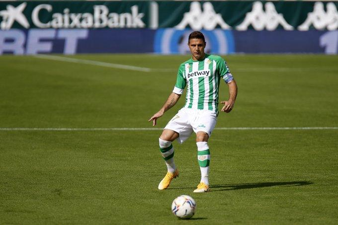
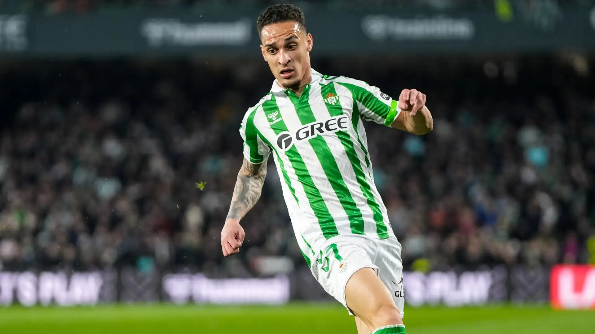
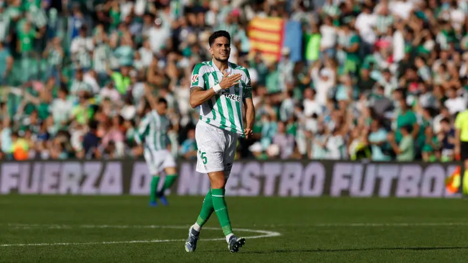
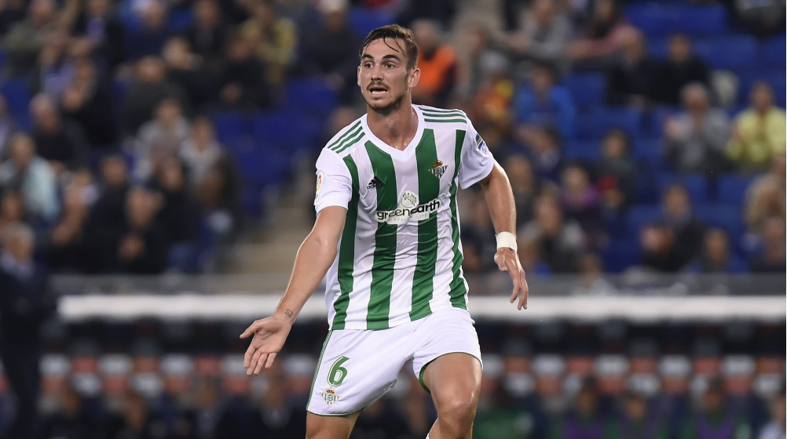